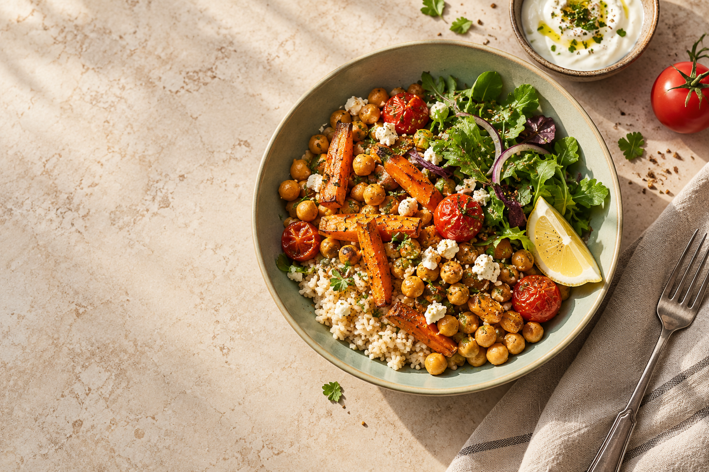

Cuéntanos lo importante
Objetivo, gustos, tiempo y alimentos a excluir.
MENOS IMPROVISAR. MÁS DISFRUTAR.
Tú eliges qué quieres conseguir y qué te gusta. Nosotros ponemos orden: un menú que puedes cambiar, recetas con cantidades y una compra sin duplicados.
Sin registro · Sin anuncios · Tus datos se quedan en tu navegador

Imagen de portada generada · ilustrativaObjetivo, gustos, tiempo y alimentos a excluir.
Cambia platos, ajusta raciones y fija favoritos.
Recetas paso a paso y una sola lista de compra.
COMIDA RECONOCIBLE
32 recetas de partida con alimentos cotidianos. Los nutrientes se calculan a partir de los gramos de cada ingrediente, con referencia del USDA.
Una comida completa que puedes llevar en táper.
Una alternativa vegetal con ingredientes sencillos.
Un desayuno que apenas necesita preparación.
SIN PROMESAS DE CAMBIOS FÍSICOS
Elige organizar comidas sin contar calorías o utiliza una referencia energética orientativa para adultos. Las recetas no garantizan cubrir todas tus necesidades ni producir un cambio de peso.
Si eres menor, estás en embarazo o lactancia, tienes un trastorno de la conducta alimentaria o necesitas una pauta por enfermedad o tratamiento, utiliza las recetas como ideas y consulta tu plan con un profesional.
Conoce los cálculos, las fuentes y sus límites ↗TU COCINA, CON UN PLAN
No se guarda automáticamente. Puedes guardar una copia en este dispositivo o descargar un archivo para abrirlo después.
RECETARIO DE MESA CLARA
Las recetas se pueden consultar sin introducir peso, edad ni objetivos. No son prescripciones nutricionales.
El recetario completo no aplica tus filtros del plan. Revisa ingredientes y etiquetas antes de elegir una receta. Dentro del menú, las alternativas sí respetan tus exclusiones.